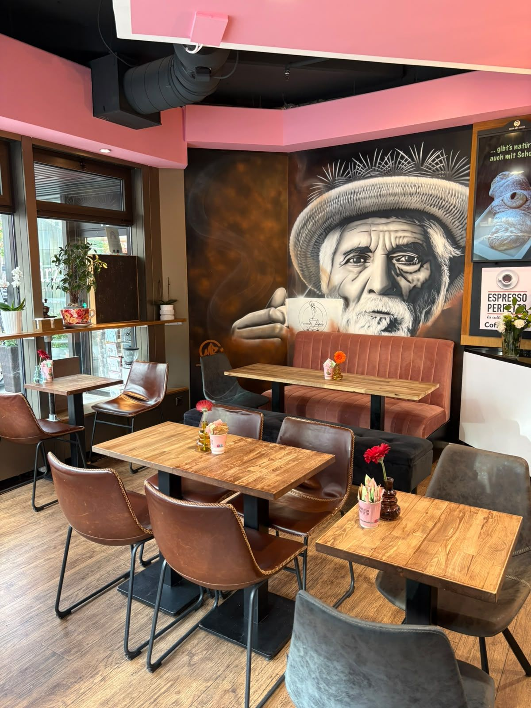
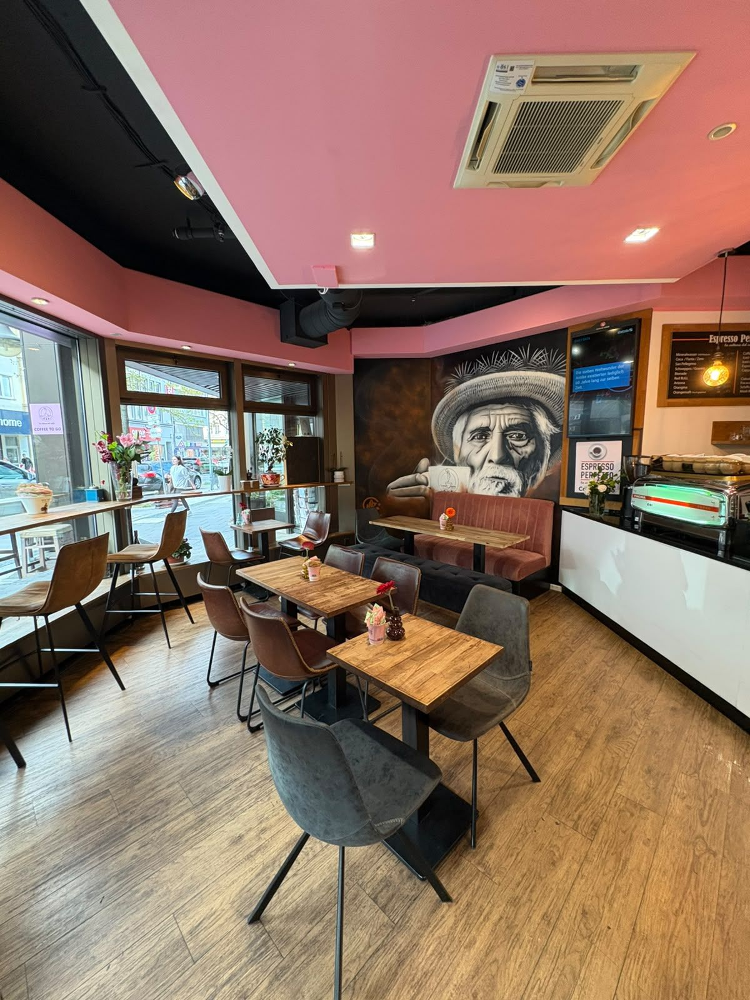
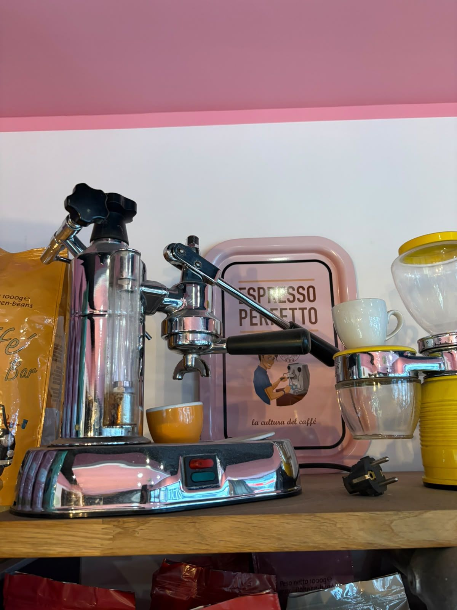
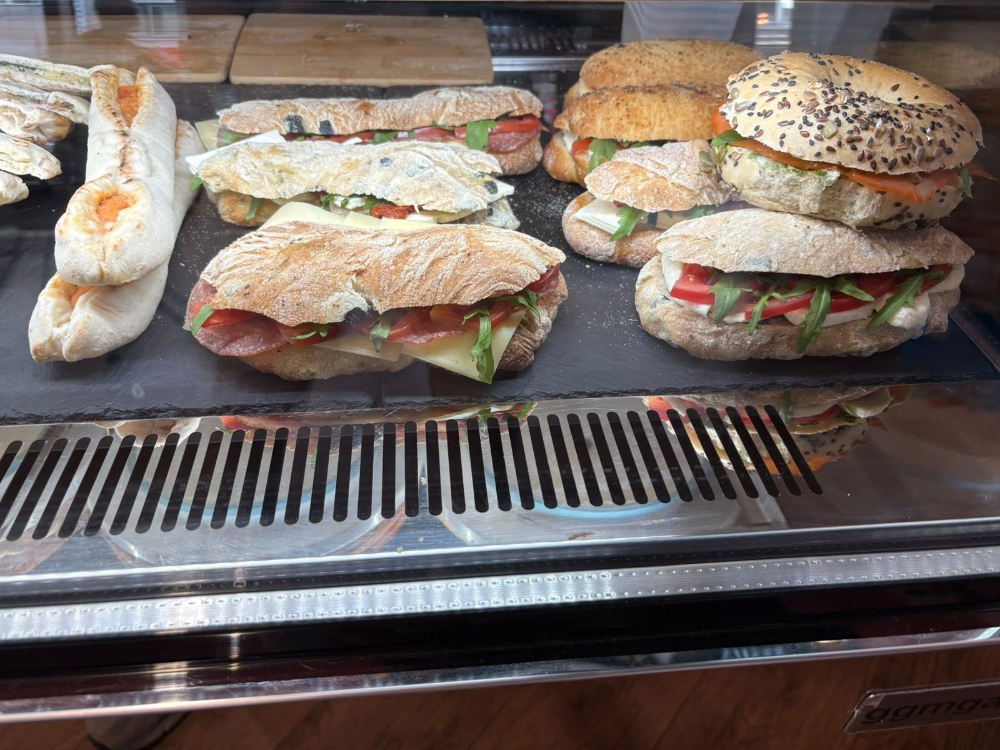
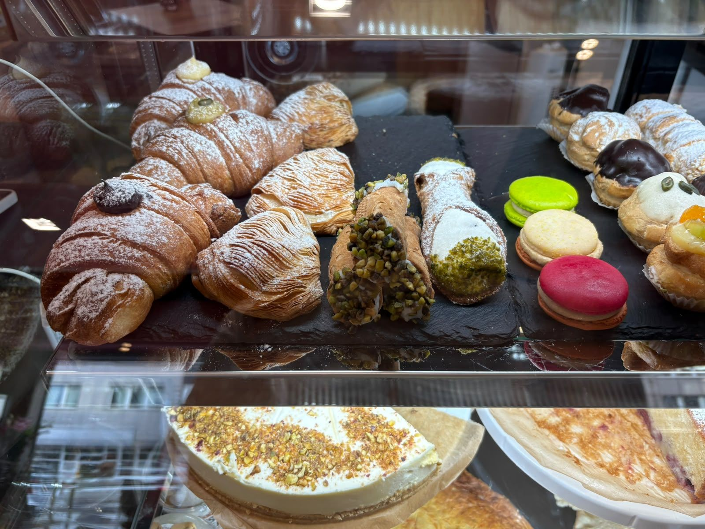
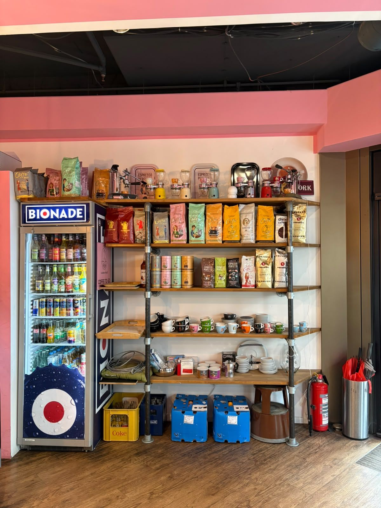

Friedrichstraße 40a, Düsseldorf
Un caffè,
per favore.
Italienisch geprägter Espresso, Frühstück bis in den Nachmittag und Cannoli zum Dessert. Zum Bleiben oder Mitnehmen.

Eine kleine Bar an der Friedrichstraße. Man kommt für einen Espresso an der Theke und bleibt dann doch für das Frühstück, ein Stück Kuchen oder weil der Platz am Fenster gerade frei ist.
Die Bar
Eine kleine Auszeit zwischen Friedrichstadt und Bilk
Rosa Decke, Holztische, ein großes Wandbild in der Sitzecke: Drinnen sitzt du am Fenster und siehst dem Viertel beim Vorbeigehen zu, draußen gibt es Plätze für sonnige Tage. Hinter der Theke stehen Baristas, die Espresso ernst nehmen und trotzdem freundlich bleiben, auch auf Englisch.
Dazu gibt es Frühstück, Quiche, Sandwiches und hausgemachten Kuchen. Kaffeebohnen kannst du zum Mitnehmen kaufen. Reservieren musst du nicht: einfach hereinkommen.
- 0 Reservierungen nötig
- WLAN kostenlos
- Hunde willkommen



Frühstück und Brunch
Montags bis freitags öffnet die Bar um sieben Uhr, samstags um acht, sonntags um zehn. Wer früh kommt, bekommt zum Espresso Frühstück. Wer später kommt, bleibt für den Brunch.
In der Vitrine liegen belegte Ciabatta, Focaccia und Schiffchen, dazu Quiche und Müsli-Becher. Viele Gerichte sind vegetarisch. Was es an dem Tag genau gibt, siehst du an der Theke.
Alles gibt es auch zum Mitnehmen, falls es schnell gehen muss.
Kleines Kaffee-ABC
Italienische Kaffeekarten sind kurz, die Namen aber nicht immer selbsterklärend. Das hier sind die Klassiker, wie sie allgemein zubereitet werden.
- Espresso
- Ein kleiner, kräftiger Kaffee, der mit Druck durch fein gemahlenes Kaffeemehl gepresst wird. Die Basis von fast allem anderen.
- Espresso Macchiato
- Ein Espresso mit einem Klecks Milchschaum obendrauf. Macchiato heißt „gefleckt“.
- Cappuccino
- Espresso, heiße Milch und Milchschaum, in etwa zu gleichen Teilen. Wird in Italien klassisch am Vormittag getrunken.
- Latte Macchiato
- Viel warme Milch im hohen Glas, der Espresso kommt von oben dazu. Milder und größer als der Cappuccino.
- Matcha Latte
- Grüner Matcha-Tee mit Milch. In der Bar gibt es ihn mit Erdbeersirup.

Cannoli, Cornetti und Kuchen
Cannoli stammen ursprünglich aus Sizilien: knusprige Teigröllchen mit süßer Füllung. In der Bar gehören sie zum Kaffee wie der Zucker.
Daneben liegen Cornetti mit Puderzucker, Sfogliatelle, Macarons und Brownies. Eine Etage tiefer stehen die Kuchen. Und dann ist da noch der Pistazien-Ball, selbstgemacht, wie das Schild in der Vitrine sagt.
Und wenn dir der Kaffee so gut schmeckt, dass du ihn zu Hause haben willst: Kaffeebohnen gibt es zum Mitnehmen.

Espresso für zu Hause
Im Regal neben der Tür stehen Kaffeebohnen verschiedener Röstereien, auch mit dem Espresso Perfetto-Logo, dazu Tassen. Ein paar allgemeine Tipps, damit der Kaffee zu Hause auch gut schmeckt.
- In der Espressokanne
- Wasser bis knapp unter das Ventil, Kaffee locker einfüllen und nicht andrücken. Auf mittlerer Hitze kochen und vom Herd nehmen, sobald es zu blubbern beginnt.
- Bohnen lagern
- Luftdicht, dunkel und bei Zimmertemperatur. Nicht im Kühlschrank, dort ziehen sie Feuchtigkeit und Gerüche.
- Frisch mahlen
- Am besten erst kurz vor der Zubereitung. Gemahlener Kaffee verliert schnell sein Aroma.
Impressionen
Schau mal rein
459 Gäste haben bei Google bewertet
Gelobt werden vor allem diese Dinge. Lies selbst nach, was andere schreiben.
- Der Espresso
- Die freundlichen Baristas
- Die saubere Bar
- Das Frühstück
Gut zu wissen
- Reservieren
- Nicht nötig, die Bar nimmt keine Reservierungen an. Ein Platz findet sich meistens.
- Milch
- Auf Wunsch gibt es Hafer-, Soja- oder laktosefreie Milch.
- Arbeiten
- Kostenloses WLAN. Viele Gäste kommen mit Laptop für ein, zwei konzentrierte Stunden.
- Hunde
- Hunde sind willkommen.
- Sitzen
- Plätze drinnen und draußen. Alles gibt es auch zum Mitnehmen.
- Vegetarisch
- Große Auswahl an vegetarischen Gerichten. Frag an der Theke nach dem Tagesangebot.
- Kaffeebohnen
- Gibt es zum Mitnehmen. Lass dich an der Theke beraten.
- Allergene
- Informationen zu Allergenen und Zusatzstoffen bekommst du an der Theke.
- Öffnungszeiten
- Montag bis Freitag 7 bis 18 Uhr, Samstag 8 bis 18 Uhr, Sonntag 10 bis 16 Uhr.
Besuch
Espresso Perfetto Bar
Friedrichstraße 40a
40217 Düsseldorf
| Montag | 7:00 – 18:00 |
|---|---|
| Dienstag | 7:00 – 18:00 |
| Mittwoch | 7:00 – 18:00 |
| Donnerstag | 7:00 – 18:00 |
| Freitag | 7:00 – 18:00 |
| Samstag | 8:00 – 18:00 |
| Sonntag | 10:00 – 16:00 |